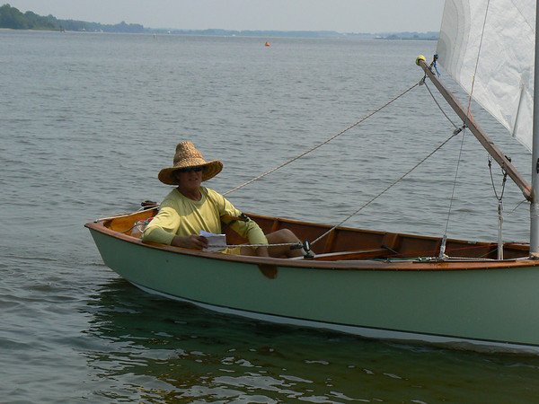

Seven Penguins enjoyed light air in the morning and light plus in the afternoon for four races on the Chester River on Saturday, July 28th, the 66th Annual Corsica River Regatta. We were treated to current both ways, ebb in the morning and flood later in the day. As usual, current dictated strategy and those of us who made errors in judgment suffered; one medium to large error left little room for recovery.
Charlie Krafft sailing with Matthew Chow was smart enough to pick the right side in the third race, actually the only race sailed in mostly slack water (or what passes for slack water on the Chester). He rounded the weather mark in first and held off Bud Daily and new crew Laura Wright to win the race. Scott Williamson was a player in this and one of the other races but succumbed to one of those errors in judgment at the leeward mark. Jonathan and Emily Bartlett sailed a very consistent series to be subjected to a faulty mainsheet block attachment in the last race. In the final analysis persistence and patience paid big dividends. Bud and Laura never let a race get away from them. JB and Emily only faltered due to an equipment failure. The rest of us had at least one not very good race.
Monty Baker introduced new crew Karen Maize to Penguin sailing and topped the day off with a fine third place finish in the final race. Finally, Roger Pickall turned out for the first time this season and missed his last years crew Taylor Penwell. Next time Roger. These boats are difficult to sail without crew. And speaking of crew, Scott had at least one potential crew present at the regatta but not sailing yet. It won’t be long though Scott.
My personal thanks to Del Walter who cheerfully enjoyed a pretty tough day.
And thanks to Fitzhugh Turned who did a fine job on Race Committee. Racing on Sunday was called due to unstable conditions. Del and I drove home to monumental rain and wind storm. There was a little unpredictable something for everyone on the Shore on Sunday.
We hope to see everyone at Miles River this weekend. Remember this is a Saturday only regatta and remember to bring your bathing suit.
|
Rank |
Fleet |
Boat |
SailNo |
Helm |
Crew |
Total |
Nett |
|||||||
|---|---|---|---|---|---|---|---|---|---|---|---|---|---|---|
|
1 |
Penguin | Against the Grain | 9662 | Bud Dailey | Laura Wright |
1.0 |
1.0 |
2.0 |
2.0 |
6.0 | 6.0 | |||
|
2 |
Penguin | Rockhopper | 9630 | Charles Krafft | Matthew Chow |
4.0 |
2.0 |
1.0 |
5.0 |
12.0 | 12.0 | |||
|
3 |
Penguin | Stewie | 9576 | Jonathan Bartlett | Emily Bartlett |
2.0 |
3.0 |
3.0 |
4.0 |
12.0 | 12.0 | |||
|
4 |
Penguin | Black Side Down | 9696 | Paul Hull | Del Walter |
3.0 |
6.0 |
4.0 |
1.0 |
14.0 | 14.0 | |||
|
5 |
Penguin | Current Event | 9700 | Monty Baker | Karen Maize |
5.0 |
5.0 |
5.0 |
3.0 |
18.0 | 18.0 | |||
|
6 |
Penguin | Thunder Chicken | 7703 | Scott Williamson |
6.0 |
4.0 |
6.0 |
7.0 |
23.0 | 23.0 | ||||
|
7 |
Penguin | Crewsin | 8241 | Roger Pickall |
7.0 |
7.0 |
7.0 |
6.0 |
27.0 | 27.0 |
PRO Fitzhugh Turner
Scorekeeper Mark Schneider
http://www.smugmug.com/gallery/3237317/87/179086077P-1-15#178996808
